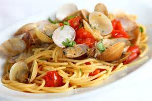

Spaghetti alle Vongole
Ingredients
- 2 Tbsp Olive Oil
- 3 Cloves garlic, crushed
- Pinches of peperoncino flakes
- 1 tsp parsley, chopped
- 1/2 Cup dry white wine
- 2 14 oz tomatoes, tin chopped
- 2 1/2 lb clams (vongole)
- 2 Tbsp finely chopped parsley
- 14 oz Spaghetti or Linguine
- 1/2 tsp grated lemon zest
- lemon wedges
- Salt and pepper to taste
Directions
- Heat the oil in a large deep frying pan.
- Add the garlic and chilli and cook over low heat for 30 seconds.
- Add the parsley, wine and tomatoes.
- Increase the heat and boil, stirring occasionally, for 8 to 10 minutes until the liquid is reduced by half.
- Clean the clams by scrubbing them thoroughly.
- Discard any that are broken or cracked or do not close when tapped on the work surface.
- Add to the saucepan.
- Cover the pan, increase the heat and cook for 3 to 5 minutes until the clams open.
- Shake the pan often.
- Remove the clams from the pan, discarding any that stay closed.
- Stir in the parsley and season. Uncover the pan and boil until thick.
- Set 12 clams aside and extract the meat from the rest.
- Cook the pasta in a large saucepan of boiling salted water until al dente.
- Drain and stir through the sauce. Add the lemon zest, reserved clams and clams meat and toss well.
- Serve with the lemon wedges.